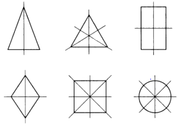

Равные
фигуры -
фигуры, который могут быть переведены друг в друга некоторым движением.

Примечание. Равные
фигуры
называют также конгруэнтными.
Симметрия относительно прямой
(оси).
Две точки А, A1, расположенные по разные стороны
от прямой α на одном и том же
перпендикуляре к ней и на одинаковом
расстоянии от
основания L перпендикуляра,
называются симметричными относительно прямой α.

Преобразование плоскости называется осевой симметрией с данной
осью, если каждой
точке
плоскости
ставится в соответствие
точка, симметричная ей относительно данной
оси.
Две
фигуры называются симметричными относительно
прямой
(оси) α, если одну из них можно
перевести в другую с помощью симметрии относительно
прямой α.

Если
многоугольник имеет
ось симметрии,
то каждая его
вершина, не лежащая на
оси, симметрична некоторой
другой его вершине.
Симметрия относительно
точки
(центра).Две
точки А, A1, расположенные на одной
прямой
с точной O по разные стороны от нее на одинаковом
расстоянии называют также
центром симметрии.

Преобразование
плоскости называется
центральной симметрией с
центром в данной
точке, если каждой
точке ставится в соответствие
точка, симметричная относительно данного
центра.
Две фигуры
называются симметричными относительно точки O, если одну из них можно перевести в другую
с помощью симметрии относительно точки O.

Примечание. Центральная симметрия относительно
точки O является поворотом
плоскости вокруг О на угол 180 °.
Если каждой точке
фигуры соответствует симметричная ей
точка этой же
фигуры, то говорят, что данная
фигура имеет
центр симметрии.

Если многоугольник имеет
центр симметрии, то каждая его
вершина симметрична некоторой другой его
вершине.
Признаки равенства
треугольников описаны в разделе "Признаки равенства треугольников".